<mat-drawer-container style="background-image: linear-gradient(to right,#282828 100%, #272727 65.63%, #262626 0%);">
  <mat-drawer mode="over" class="sidebar" style="height: 100vh; background-image: linear-gradient(to right,#282828 100%, #272727 65.63%, #262626 0%);" [(opened)]="opened">

      <div class="menubox"><a class="menuboxText" (click)="menuToggle()"><h1><b>MENU</b></h1></a></div>

      <div class="menubox"> Home</div>
      
      <div class="menubox"  *ngIf="displayRegAndLogin">
      <div class="menubox"><a class="menuboxText" (click)="registerRedirect()">Register</a></div>
      </div>

      <div class="menubox"  *ngIf="displayRegAndLogin">
      <div class="menubox"><a class="menuboxText" (click)="loginRedirect()">Login</a></div>
      </div>
      <div class="menubox"><a class="menuboxText" (click)="searchRedirect()">Search</a></div>
      <div class="menubox"><a class="menuboxText" (click)="myAccountRedirect()">My Account</a> </div>


      <div class="menubox"  *ngIf="isDisplayed">
        <div class="menubox"><a class="menuboxText" (click)="bugReportRedirect()">Report A Bug</a> </div>
      </div>


      <div class="menubox"  *ngIf="isDisplayed">
        <div class="menubox" style="position:absolute; bottom:0;"><a class="menuboxText" (click)="logoutRedirect()">Log Out</a></div>
      </div>
  
  </mat-drawer>

  <mat-drawer-content style=" height: 100vh;">

    <!-- <button mat-flat-button id="sidenavtoggle" (click)="menuToggle()" style="color: lightgray">Toggle Sidebar</button> -->
      <button mat-icon-button id="sidenavtoggle" class="nav-toggle" (click)="menuToggle()">
        <mat-icon>menu</mat-icon>
      </button>
    
    <router-outlet></router-outlet>
    <!-- <button mat-icon-button id="sidenavtoggle" (click)="menuToggle()" style="color: lightgrey"  aria-label="Example icon button with a menu icon">
      <mat-icon>menu</mat-icon>
    </button> -->
    <!-- <footer style="justify-content: center; text-align: center; padding-top: 90%; " ></footer> -->
    <!-- <button mat-flat-button id="sidenavtoggle" (click)="menuToggle()" style="color: lightgray">Toggle Sidebar</button> -->

    <!-- <button mat-flat-button id="sidenavtoggle" (click)="menuToggle()" style="color: lightgray">Toggle Sidebar</button> -->

  </mat-drawer-content>
  
  
</mat-drawer-container>